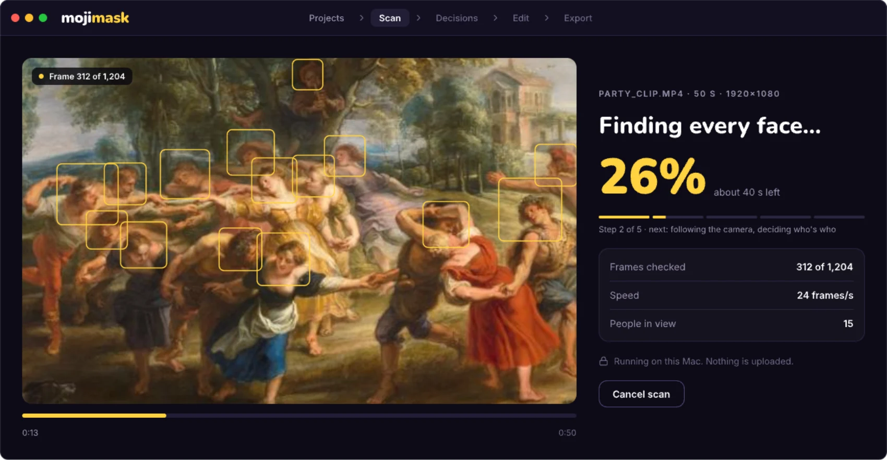
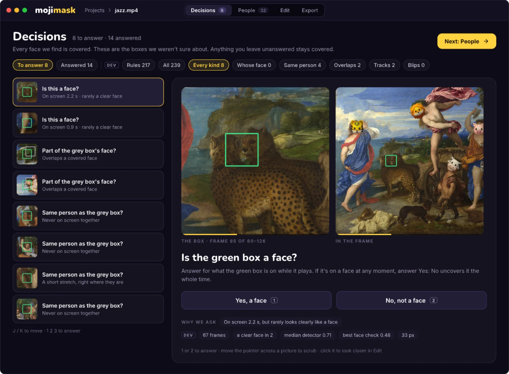
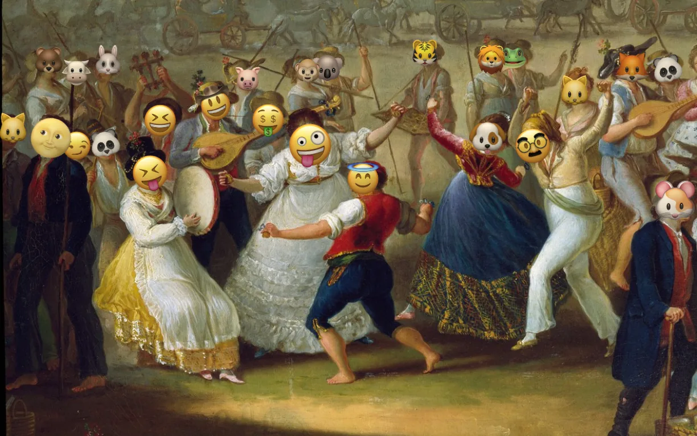
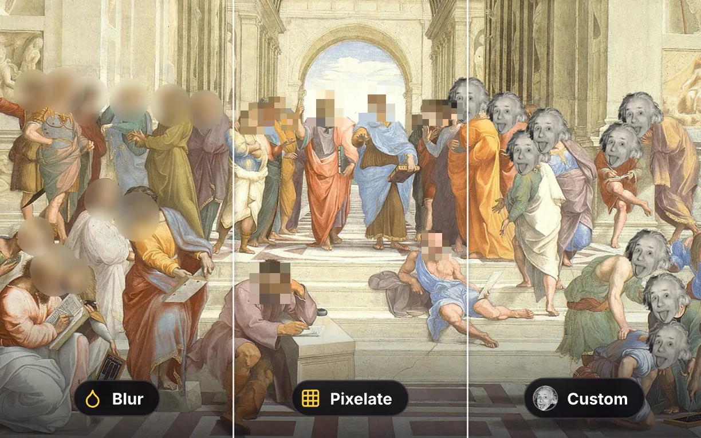
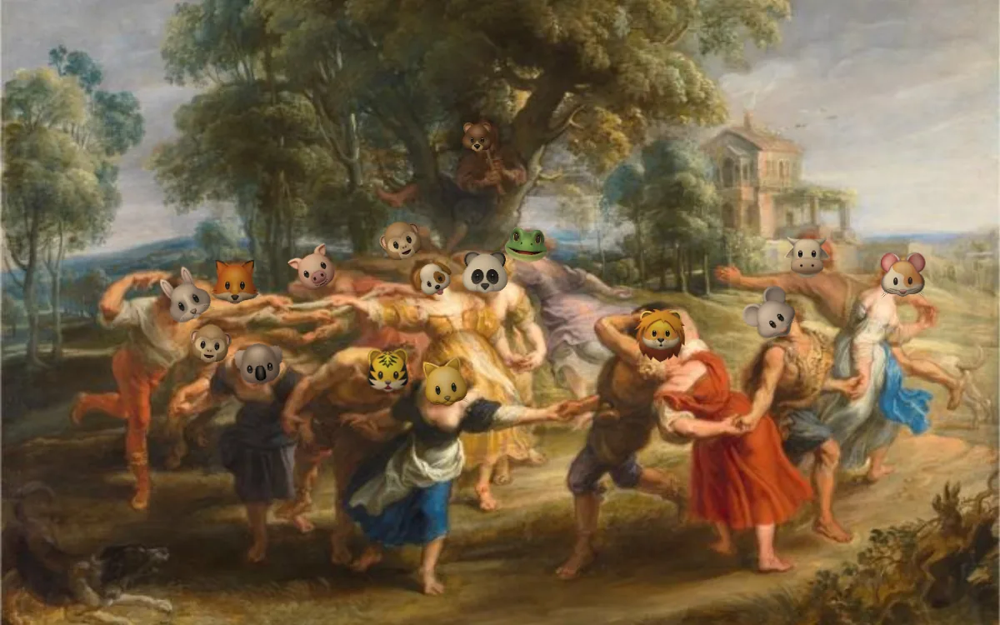
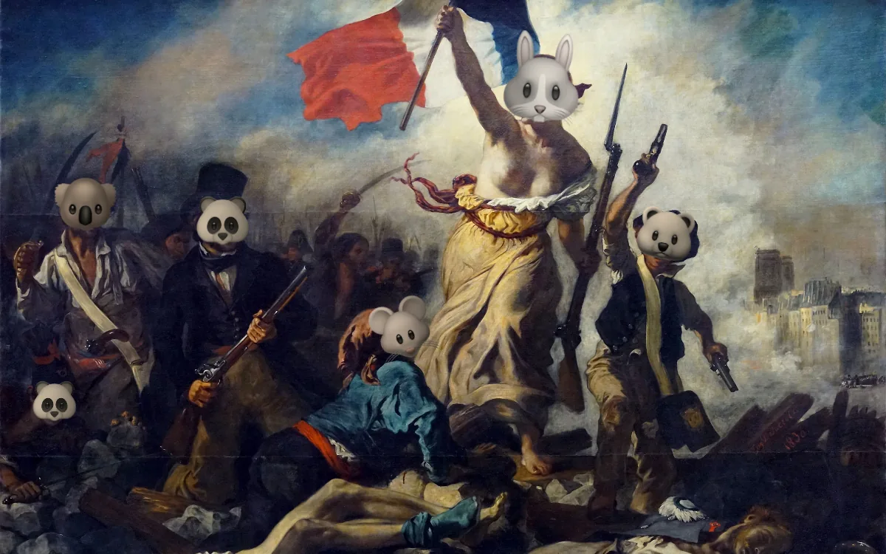
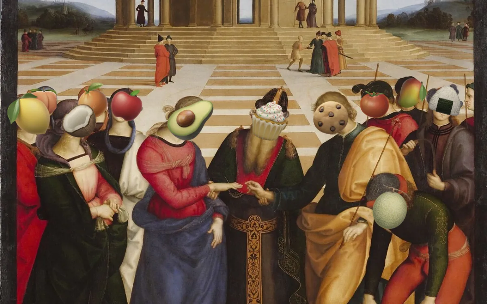

Advanced tracking for tricky shots
See a 45 second demo in the clip above.
For the videos other tools give up on
Multilayered detection
Crowds, strobe lights, fast motion can confuse other tools. Mojimask uses research grade machine learning to find, follow and understand each person in the scene.
- Finding: YOLOv5-Face and RetinaFace detect and double-check faces. YOLO11x-pose finds heads even when faces are hidden, and tilts the masks.
- Following: optical flow follows each person from frame to frame, and SFace and OSNet-AIN recognise them when they reappear.
- Depth: Depth Anything V2 keeps faces at different distances apart and layers covers behind whatever is in front of them.


Human judgement
For the perfectionist, the app will still ask you to weigh in on the tricky cases, as well as allow for refinement.
- Quick workflow for unresolved decisions
- Automatic judgements can be modified
- Set custom masks or unmask the consenting
Some pizzazz with your privacy
Emoji presets, blur, pixelate, or even upload a sticker. Various options to match scene lighting and body pose.




